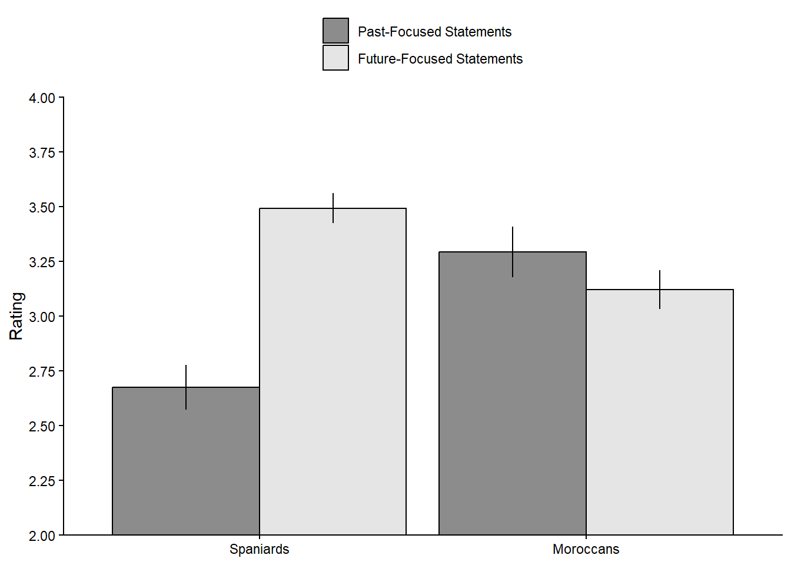

Citation and DOI: de la Fuente, J., Santiago, J., Román, A., Dumitrache, C., & Casasanto, D. (2014). When you think about it, your past is in front of you: How culture shapes spatial conceptions of time. Psychological Science, 25(9), 1682–1690. https://doi.org/10.1177/0956797614534695
Part A (known case) or Part B (a classmate’s project paper): Part A (Group B, Choice 3: Experiment 2)
Part B only: the classmate’s project repo, and which target outcome is its key effect: N/A
Target outcomes
Written before opening the data. Quote each from the paper. In Part B, one of these must be the project’s key effect.
#
Target outcome (quoted)
Paper value(s)
1
“temporal focus differed significantly between Spaniards and Moroccans, as indicated by a significant interaction of temporal focus and group, F(1, 78) = 19.12, p = .001, ηp2 = .20 (Fig. 2)”
F(1, 78) = 19.12, p = .001, ηp² = .20
2
“Moroccans showed greater agreement with past-focused statements than Spaniards did, t(78) = 4.04, p = .001”
t(78) = 4.04, p = .001
3
“Spaniards showed greater agreement with future-focused statements than Moroccans did, t(78) = −3.32, p = .001”
t(78) = −3.32, p = .001
Materials inventory
Item
Available?
Notes
Raw data
Yes
data/DeLaFuenteEtAl_2014_RawData.xls, sheet “TFQ Exp2”. It has one row per participant per item (80 participants × 21 items = 1,680 rows). There are two more versions of the file (“OSF-corrected” and “OSF-corrected_EHedit”), but their Exp 2 sheet is identical to the original row for row. In both groups, participants 24 and 25 are partly mislabeled as participant 40 (see Reproduction).
Processed data
No
There are no subscale means per participant. They have to be computed from the item-level data.
Codebook / variable descriptions
Partial
The “Notes” sheet explains what each sheet contains. The column names explain themselves: group, participant, subscale (PAST/FUTURE), item (the full Spanish wording) and agreement. The agreement column header says “0=complete disagreement; 5=complete agreement”, but the values actually run from 1 to 5.
Analysis code
No
Neither the course folder nor the article includes analysis code.
Preregistration
No
The study was not preregistered (2014).
Reproduction
The agent’s work, under your direction. Keep all code visible.
This is the same analysis as reproducibilityReport.Rmd in this folder, condensed.
d_raw <-read_excel("data/DeLaFuenteEtAl_2014_RawData.xls", sheet ="TFQ Exp2")# The Exp 2 sheet is the same in all three versions of the data fileversions <-list.files("data", full.names =TRUE) %>%map(\(f) read_excel(f, sheet ="TFQ Exp2"))all(map_lgl(versions, \(v) identical(v, versions[[1]])))
# Every participant should have 21 rows. In both groups, IDs 24, 25 and 40 do not:d %>%count(group, participant) %>%filter(n !=21) %>%kable()
group
participant
n
Moroccan
24
17
Moroccan
25
4
Moroccan
40
42
young Spaniard
24
17
young Spaniard
25
4
young Spaniard
40
42
# Rows are stored in questionnaire order: blocks of 21 (items 1-21), one block per person.# The middle rows labeled "40" are items 18-21 of participant 24 plus items 1-17 of# participant 25, so participants are renumbered from row order within each group.d <- d %>%group_by(group) %>%mutate(pid = (row_number() -1) %/%21+1) %>%ungroup() %>%mutate(id =paste(group, pid, sep ="_"),group =factor(group, levels =c("young Spaniard", "Moroccan"),labels =c("Spaniards", "Moroccans")),subscale =factor(subscale, levels =c("PAST", "FUTURE")))# Check: 40 participants per group, each with items 1-21 exactly onced %>%group_by(group, id) %>%summarise(complete =identical(sort(item_num), as.numeric(1:21)), .groups ="drop") %>%count(group, complete) %>%kable()
group
complete
n
Spaniards
TRUE
40
Moroccans
TRUE
40
# Mean rating for each participant on each subscaled_sub <- d %>%group_by(group, id, subscale) %>%summarise(rating =mean(rating), .groups ="drop")
# Descriptives and Figure 2d_desc <- d_sub %>%group_by(group, subscale) %>%summarise(mean =mean(rating), se =std.err(rating), n =n(), .groups ="drop")kable(d_desc, digits =3)
group
subscale
mean
se
n
Spaniards
PAST
2.675
0.102
40
Spaniards
FUTURE
3.492
0.067
40
Moroccans
PAST
3.293
0.116
40
Moroccans
FUTURE
3.120
0.088
40
ggplot(d_desc, aes(group, mean, fill = subscale)) +geom_col(position =position_dodge(0.9), color ="black", width =0.9) +geom_linerange(aes(ymin = mean - se, ymax = mean + se), position =position_dodge(0.9)) +scale_fill_manual(values =c(PAST ="grey55", FUTURE ="grey90"),labels =c("Past-Focused Statements", "Future-Focused Statements"),name =NULL) +coord_cartesian(ylim =c(2, 4)) +scale_y_continuous(breaks =seq(2, 4, 0.25), expand =c(0, 0)) +labs(x =NULL, y ="Rating") +theme_classic() +theme(legend.position ="top", legend.direction ="vertical")

# Target 1: 2 (group, between) x 2 (subscale, within) mixed ANOVAanova_res <-aov_ez(id ="id", dv ="rating", data = d_sub,between ="group", within ="subscale",anova_table =list(es ="pes"))anova_res
# Sensitivity check: the same ANOVA using the participant IDs as recorded.# Participant 25 in each group has no PAST data and is dropped (df = 76), and the# two people labeled 40 are averaged together.d %>%mutate(raw_id =paste(group, participant)) %>%group_by(group, raw_id, subscale) %>%summarise(rating =mean(rating), .groups ="drop") %>%aov_ez(id ="raw_id", dv ="rating", data = .,between ="group", within ="subscale", anova_table =list(es ="pes"))
Figure 2. All four means match the published figure: Spaniards 2.68 (past) and 3.49 (future), Moroccans 3.29 (past) and 3.12 (future). Two of the error bars appear swapped in the published figure. The paper shows Spaniards-future SE ≈ .12 and Moroccans-past SE ≈ .07, but the data give .067 and .116.
p-values. The paper reports “p = .001” for all three tests. The reproduced p-values for the interaction (≈ 3.7e-5) and the PAST t-test (≈ 1.4e-4) are well below .001. The FUTURE t-test p-value (.0012) rounds to .001.
Welch t-tests. These give the same t values, so they do not explain the small differences in t.
Checker’s verdict
Filled in by you, not the agent.
#
Paper value
Reproduced value
Verdict (exact / minor / major / not reproducible)
Reason for discrepancy
1
F(1, 78) = 19.12, p = .001, ηp² = .20
F(1, 78) = 19.144, p < .001, ηp² = .197
minor
Shared data file isn’t exactly what was analyzed in the original study
2
t(78) = 4.04, p = .001
t(78) = 4.003, p < .001
minor
Unsure - Welch t-tests give same t values so differences are unexplained
3
t(78) = −3.32, p = .001
t(78) = −3.364, p = .0012
minor
Unsure - Welch t-tests give same t values so differences are unexplained
The agent ruled out a few possible causes for discrepancies so the (minor) differences must be due to differences in the data:
software/ANOVA type (identical F for balanced 2×2 mixed design, SPSS, aov, afex and Type I/II/III sums of squares)
sums instead of means (summing 11 PAST and 10 FUTURE items did not get a closer F value)
dropping one item (leaving out any single item moved F further)
one data-entry difference (changing every participant’s subscale mean by one rating point, up or down)
welch t-tests (gave same t values)
Agent’s own claim about success, and whether it was right:
The agent claimed that the replication was mostly successful as all results lead to the same conclusions as the original paper. It stated that it was fairly easy to reproduce the results as the analysis was standard, the data was formatted well, the paper described the design well, and the effect sizes were large enough that conclusions were robust. However, it could not explain the minor numerical differences in the target outcomes, even after ruling out possible explanations. It noted that the error bars in Figure 2 of the paper were swapped for Spaniards-future and Moroccans-past, and rows for participant 24 and 25 were partially mislabelled as participant 40. The agent corrected this issue when analyzing the data, but also reported the result with the uncorrected ids for comparison.
Time
Your time (hours): 1 hour
Agent wall-clock time (hours): 23 minutes
Stopped at the 4-hour cap? What remained: Yes, did not reach 4 hour cap.
Assessment
Is the primary result analytically reproducible? What would have made this take 30 minutes?
Yes the primary result was mostly reproducible, not including very minor discrepancies. The analysis using an agent took less than 30 minutes.
AI documentation
Agent and interface (e.g., Claude Code, Codex CLI, Cursor):
Claude Code (VS Code extension)
Model and version, if the tool reports it:
Claude Opus 5.5 (claude-opus-5-5)
Context you gave it (files, instructions, any context file):
The course repo folder URL (ps3/Group B/Choice 3) and the instruction “reproduce the target outcomes in the article. report using reproducibilityReport.Rmd”. Then the URL of this template, with instructions to put everything in a “Part A” folder and fill in the non-human sections. No CLAUDE.md or other context file.
Number of times you intervened, and the most important intervention:
No interventions apart from instructions mentioned above ^. After the check report was produced, I asked the agent to explain why there would be minor discrepancies in the first target outcome